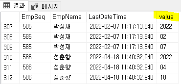

STRING_SPLIT (문자열의 구분자를 행으로 분리)
-- STRING_SPLIT( "문자열", "구분자" ) => 컬럼 문자열의 구분자를 행으로 분리 할 수 있다
SELECT A.EmpSeq, A.EmpName, LastDateTime, value
FROM _TDAEmp AS A
CROSS APPLY string_split(CONVERT(NVARCHAR(10),A.LastDateTime,23),'-')

행을 열로 변환 (피벗테이블 PIVOT)
CREATE PROC djb_SWPDQCReportBtnQuery
@ServiceSeq INT = 0,
@WorkingTag NVARCHAR(10)= '',
@CompanySeq INT = 1,
@LanguageSeq INT = 1,
@UserSeq INT = 0,
@PgmSeq INT = 0,
@IsTransaction BIT = 0
AS
DECLARE @QCSeq INT
SELECT @QCSeq = ISNULL(A.QCSeq, 0)
FROM #BIZ_IN_DataBlock1 AS A
CREATE TABLE #Tmp_Minor
(
MinorSeq INT ,
Serl INT ,
ValueText NVARCHAR(100)
)
INSERT INTO #Tmp_Minor
SELECT A.MinorSeq ,
A.Serl ,
A.ValueText
FROM _TDAUMinorValue AS A
WHERE A.CompanySeq = @CompanySeq
AND MajorSeq = 1000566
SELECT MinorSeq AS UMMngType , -- 기기명
[15000001] AS EquipName , -- 검사항목
[15000002] AS InspectionItem, -- 단위
[15000003] AS UnitName , -- 기준값
[15000004] AS STDValue
FROM (SELECT Serl,MinorSeq,ValueText FROM #Tmp_Minor) AS B
PIVOT (
MIN(ValueText)
FOR Serl
IN ([15000001],[15000002],[15000003],[15000004])
) AS A
LEFT OUTER JOIN djb_TPDQCReportInspection AS C ON C.CompanySeq = @ComPanySeq
AND A.MinorSeq = C.UMMngType
AND C.QCSeq = @QCSeq
WHERE C.CompanySeq IS NULL